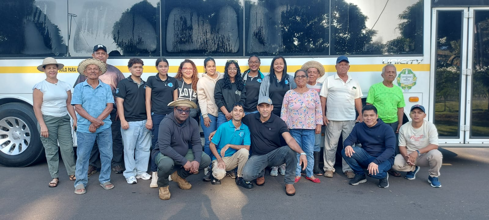

Próximamente
Nueva noticia en camino
Estamos preparando nueva información sobre las actividades de la CONAC. Vuelve pronto.
Manténgase informado sobre las actividades, proyectos, reuniones y acontecimientos más relevantes de la Confederación Nacional de Asentamientos Campesinos.
En esta sección encontrará las noticias más recientes sobre las acciones, proyectos, capacitaciones y eventos desarrollados por la Confederación Nacional de Asentamientos Campesinos.
Estamos preparando nueva información sobre las actividades de la CONAC. Vuelve pronto.

Un grupo de estudiantes visitó los 7 asentamientos campesinos de Veraguas, compartiendo con las comunidades y conociendo de cerca la problemática de tenencia de tierra que enfrentan.
Leer másEstamos preparando nueva información sobre las actividades de la CONAC. Vuelve pronto.
Noticias externas relacionadas con los asentamientos campesinos y la titulación de tierras en Panamá.